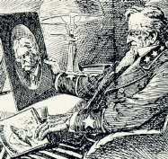

from Denver Post

from San Francisco
Call

from (Spokane)
Spokesman-Review

from Chicago Daily
Tribune

from The Denver
Post

from Los Angeles Daily
Times

from St. Louis
Post-Dispatch
|
|
Reports of His Death
Huck Finn don't take no stock in dead people, but when
Samuel Clemens died on April 22, 1910, it served as an
occasion for hundreds of journalists to assess what
"Mark Twain" had meant. Most papers ran a number of
Associated Press accounts of MT's last illness, death
and funeral on their front pages for April 21, 22, 23
and 24. The AP also provided additional articles on
such varied topics as the "original Huck Finn's"
response to the news of MT's death, the worth of MT's
estate, some of MT's best-known sayings, etc. Listed
below are selected, representative comments written by
local editors from around the nation. Though perhaps
the most common theme is how well "Mark Twain" embodied
"America," it's interesting to note how different
regions tended to emphasize different aspects of his
character and career, treating him as a Midwesterner, a
Westerner, and so on. And it's curious that I haven't
found a southern paper that showed any interest in
discussing him as a Southerner.
|


{kind=link}